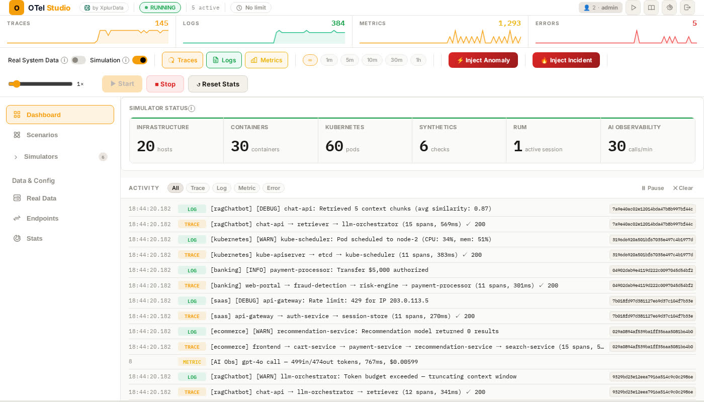
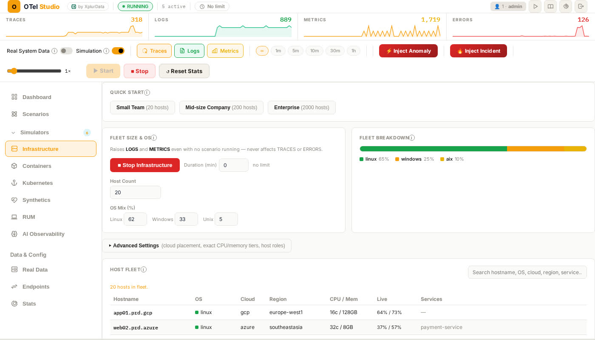
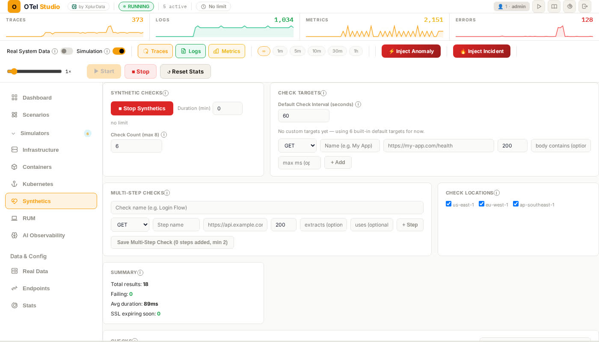

A whole estate, not just traces
Six simulators run alongside the application scenarios and share one pool of hosts, services and identities — so a host, its containers, its pods and the traces running on it all line up in your backend.

Live control room
Counters, sparklines, a simulator status strip and a live activity stream with copyable trace IDs. Start, stop, speed up, inject anomalies.

Infrastructure
Host fleets from 20 to 2,000 with a realistic cloud, region and OS mix, fleet churn, and CPU, memory, swap and iowait metrics that move together.

Kubernetes
Clusters, nodes with health conditions, pods with requests and limits, autoscaling deployments, and an events feed that uses real reason strings.

AI Observability
LLM calls across eight models with the OpenTelemetry GenAI metrics, cost, latency, quality and safety scores, and switchable failures such as cost spikes and hallucination.

Real User Monitoring
Concurrent browser sessions with Core Web Vitals, rage and dead clicks, JavaScript errors and funnels, correlated to backend traces by trace ID.

Synthetics & Containers
Single and multi-step HTTP checks with assertions, retries and SSL-expiry warnings, plus container fleets with OOM kills, crashes and CPU throttling.